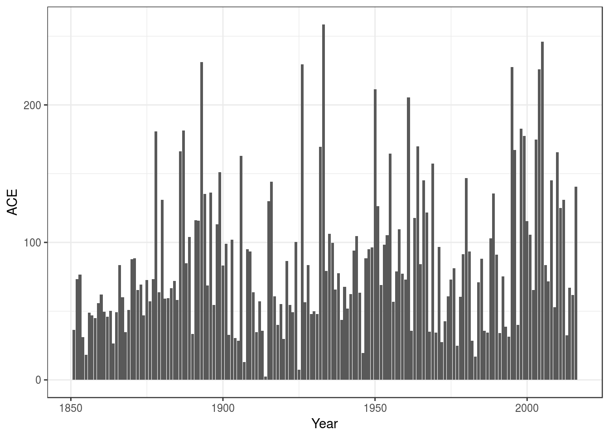

library(dplyr)
library(ggplot2)
library(HURDAT)
library(lubridate)
library(readr)
library(rrricanes)ACE or Accumulated Cyclone Energy is a method of measuring energy of a cyclone or for an entire season. It is calculated by the formula
\[ \text{ACE} = 10^{-4}\sum{v^2_\text{max}} \]
where \(v_\text{max}\) is the wind speed in knots. Values may only be used when a storm is a tropical system with winds of at least 35 knots. Additionally, only six-hour intervals are used.
To calculate ACE you would want to use the fstadv dataset.
fstadv <- load_storm_data("fstadv", col_types = cols())Now, we need to apply the rules to our dataset:
Status is Tropical Storm or Hurricane.Wind is not NAKey
Wind
fstadv <- fstadv %>%
filter(hour(Date) %in% c(3, 9, 15, 21),
Status %in% c("Tropical Storm", "Hurricane"),
!is.na(Wind)) %>%
group_by(Key) %>%
select(Name, Wind)## Adding missing grouping variables: `Key`Now let’s summarise our dataset with new variable ACE.
fstadv %>%
summarise(Name = last(Name),
ACE = sum(Wind^2) * 1e-04) %>%
arrange(desc(ACE)) %>%
top_n(10)## Selecting by ACE## # A tibble: 10 x 3
## Key Name ACE
## <chr> <chr> <dbl>
## 1 AL092004 Ivan 69.8600
## 2 AL132003 Isabel 62.5175
## 3 AL142016 Matthew 47.9950
## 4 AL062004 Frances 46.9100
## 5 AL091999 Gert 44.0025
## 6 AL112010 Igor 42.9350
## 7 AL102003 Fabian 42.6175
## 8 EP071999 Dora 42.1800
## 9 AL071998 Georges 38.9675
## 10 AL092008 Ike 38.2450This matches somewhat well with Wikipedia and other sources. But, you may notice we’re missing some storms. rrricanes currently only holds data back to 1998; this data is considered “real-time”.
A companion package, HURDAT is available in CRAN that has data for all cyclones dating back as far as 1851. This package has less data than rrricanes. But, as it is based on a post-storm reanalysis project, the data is more accurate.
Let’s revisit the top 10 using HURDAT:
AL %>%
filter(hour(DateTime) %in% c(0, 6, 12, 18),
Status %in% c("TS", "HU"),
!is.na(Wind)) %>%
group_by(Key) %>%
summarise(Name = last(Name),
ACE = sum(Wind^2) * 1e-04) %>%
arrange(desc(ACE)) %>%
top_n(10)## Selecting by ACE## # A tibble: 10 x 3
## Key Name ACE
## <chr> <chr> <dbl>
## 1 AL031899 UNNAMED 73.5675
## 2 AL092004 IVAN 71.4825
## 3 AL091893 UNNAMED 63.5250
## 4 AL132003 ISABEL 63.2800
## 5 AL041926 UNNAMED 60.9350
## 6 AL141932 UNNAMED 59.8075
## 7 AL041906 UNNAMED 55.9700
## 8 AL041957 CARRIE 55.7600
## 9 AL091966 INEZ 54.5825
## 10 AL131995 LUIS 53.4500A couple of things to notice here:
HURDAT, the common times used are 00:00, 06:00, 12:00 and 18:00 UTCACE is slightly higher and that could be for a number of reasons. For example, on re-analysis the Hurricane Research Division may have determined a cyclone was actually tropical (shown in HURDAT) when initially it was believed to be extratropical (as shown in rrricanes). Or, and more likely, they determined through additional data that a storm was actually stronger than originally though.
You can also calculate ACE for a season. Instead of grouping by Key we group by Year. I’ll stick with HURDAT in this example.
(df <- AL %>%
mutate(Year = year(DateTime)) %>%
filter(hour(DateTime) %in% c(0, 6, 12, 18),
Status %in% c("TS", "HU"),
!is.na(Wind)) %>%
group_by(Year) %>%
summarise(ACE = sum(Wind^2) * 1e-04) %>%
arrange(desc(ACE))) %>%
top_n(10)## Selecting by ACE## # A tibble: 10 x 2
## Year ACE
## <dbl> <dbl>
## 1 1933 258.5700
## 2 2005 245.9425
## 3 1893 231.1475
## 4 1926 229.5575
## 5 1995 227.6650
## 6 2004 225.8500
## 7 1950 211.2825
## 8 1961 205.3950
## 9 1998 182.8700
## 10 1887 181.2600This also matches relatively well with that on Wikipedia and other sources.
ggplot(df, aes(x = Year, y = ACE)) +
geom_bar(stat = "identity") +
theme_bw()
It would certainly seem that tropical cyclone activity ebbs and flows over time.